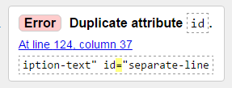
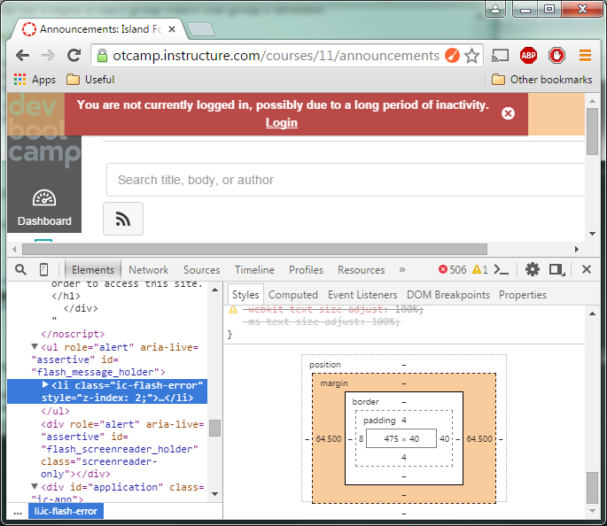

CSS FTW!!!! (And WTF!!!) ~ CSS Concepts
posted on October 19, 2015
Jump To Section....
- What is the difference between Margin, Border, and Padding?
- What are the best practices associated with using classes vs. ids?
- What are the differences between relative, absolute, fixed, and static positioning?
- What does it mean to display inline vs using inline block?
- Additional References And Resources
CSS is really useful because it allows the people who make the structure and the content of a webpage to only concentrate on the structure and the content through HTML, and it allows the people who make the design to only concentrate on the layout. It does this through having the CSS code on a separate file than the HTML file.
In order to do this, it is important to make sure that the path to the external file is correct, or else the effects of that file won't appear in the HTML file. Also, it is important to make the syntax correct, like this:
<link rel="stylesheet" type="text/css" href="path/of/my/stylesheet.css">
Because the .css file is separate from the .html file, the .css is infinitely re-usable. The person who wrote the webpage does not need to re-do the style on each page. They just have to copy that link. Also, the content and structure of the .html does not need to be cluttered by random <style> tags all throughout. For these reasons, I say "CSS FTW!!!" ("FTW" means "for the win!!!".) But CSS can sometimes also be very "WTF!????!?!!???"-inducing.
In order to alleviate this confusion, I've put together a quick cheat sheet with explanations:
What is the difference between Margin, Border, and Padding?
margin= distance between the edge of the selected element and the elements surrounding it. If there's no element surrounding it, distance between the selected element and the element/container that it stays in. (Outside distance.)border= the outline of an element.padding= distance between the child elements & text that live inside an element to the edge of the element. (Inside distance.)
What are the best practices associated with using classes vs. ids?
Classes are more portable, and more than one class can be used to style one element. For example, in our code we wanted a particular line to have multiple attributes, so we did this:
<span class="description-text separate-line">Updated August 10, 2015</span>;When we did that, that string of characters got the attributes of these 2 classes at the same time:
.description-text {
font-size: .60em;
padding-top: .5%;
margin-top: .5%;
}
and
.separate-line {
display: block;
}
That cannot be done with ID selectors. If I were to use an ID, doing the same thing would give me these error messages:
#description-text {
font-size: .60em;
padding-top: .5%;
margin-top: .5%;
}
and
#separate-line {
display: block;
}
<span id="description-text" id="separate-line">Updated August 10, 2015</span>; will give me this error message:

<span id="description-text separate-line">Updated August 10, 2015</span>;
this is also not allowed either:

ID selectors cannot be combined the same way that class selectors can be done. This is why IDs are messier, because there is more typing involved, especially if the html will have a lot of attributes, like more than 5.
Also, ID selectors should only be used once per HTML element, so ID tags should only be used in special cases that should not repeat. That is why we used class selectors, so if we wanted another HTML element to look the same, we didn't need to make a new ID selector for it.
What are the differences between relative, absolute, fixed, and static positioning?
static= default positioning style, if nopositionattribute is specified. Element flows on the page as it normally would, based on its sequence in the HTML file.absolute= element will be placed exactly where you tell it to go. This works because it is positioned in relation to the first parent element that is NOTposition: static;. If there's no such parent element, the element withposition: absolute;gets positioned relative to the<html>node.fixed= it will always be in the same place relative to the browser window. If the user scrolls up and down, the fixed element stays put even as other elements scroll past. Nice for headers, footers, or sidebar/navigation that need to be displayed prominently, but might be troublesome if the window resizes or in smaller screens.relative= elements move relative to where it would have been if it just had the default static positioning.relativeworks with other properties/attribues liketop,right,bottom,leftattributes. For example, if the element has the attributetop: 10px;, this element will shift it's position 10 pixels DOWN from where it would NORMALLY be. Thez-indexof arelative-ly positioned element will always trump astatic-ally positioned element.relativeelements can haveabsoulte-positioned child elements inside it, and this `absolute` child element will behave as if it is inside its own browser window.
What does it mean to display inline vs using inline block?
inline= the element will sit on the same row as another element.inline-block= the element will have its own row.
Additional References And Resources:
To better understand margins, borders, and padding, modern browsers like Firefox and Google Chrome have a tool for inspecting individual HTML elements. Since this school is using Google Chrome, here's a screenshot of Google's Chrome Dev Tools:
This screenshot illustrates that the element that I'm looking at has a width of 475px, and a height of 40px. It has 4px padding on the top and bottom, 8px padding on its left, and 40px padding on its right. It does not have a border, that's why there are no numbers on that side. But it has margins set to 64.50px on its left and right. The box model and the browser's Dev Tools are very useful for figuring out why an HTML element is positioning itself in an unexpected way. If the margins of an element are huge, it may be pushing the elements under it more down on the webpage than you'd expect from just normal positioning from "fixed", "relative", and "absolute".
Here are additional helpful links:
- Box Model:
- To learn more about CSS positions:
- Convert px to flexible units: